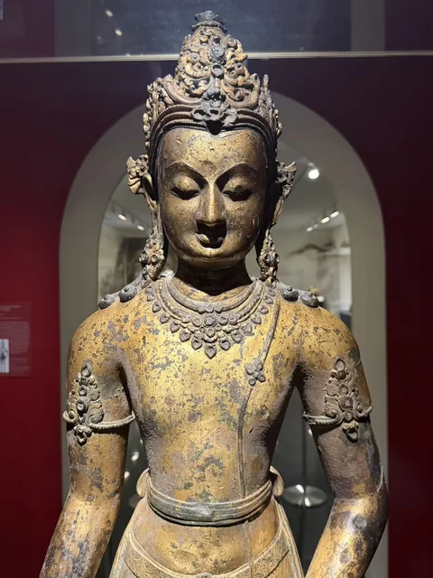
一尊像的正面与背面
先看冠饰与低垂的双眼，再绕到残损的背面。X射线让原铸缺陷、金属补条和现代补手有了区别：今天所见，是多个时期留下的身体。
THE XUZHOU COLLECTION / HOUSTON
三十余次观看之后
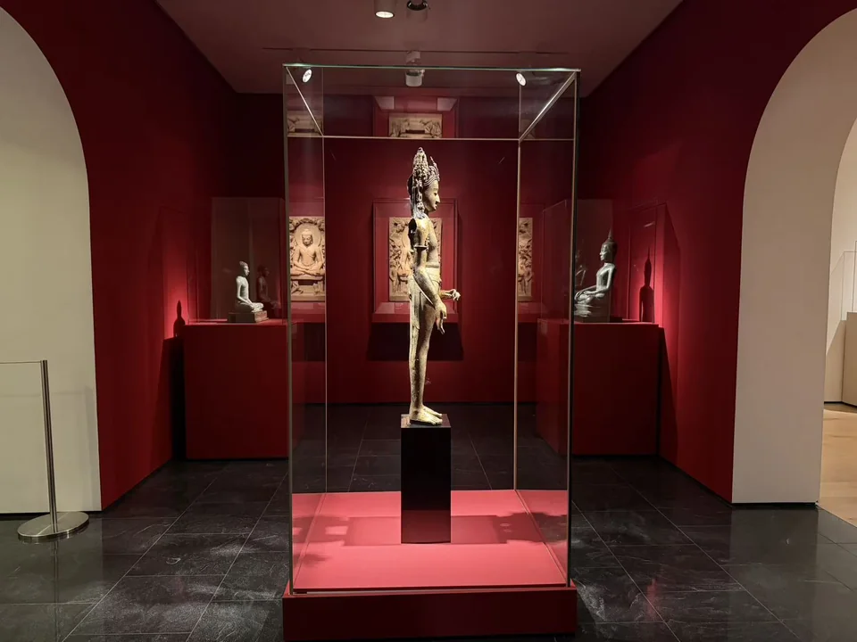
“若人为佛故，建立诸形像，刻雕成众相，皆已成佛道。”
两三年来，我几乎每周都会走进休斯顿美术馆，在虚舟收藏的佛像前停留。究竟来过多少次，已不曾细数，想来也有数十次了。在休斯顿生活的这些年，有过晴朗的日子，也经过起伏与风雨；而它们始终静立或端坐在那里，垂目含笑，衣纹无声。一次次重逢之间，这些来自遥远年代与不同地域的造像，渐渐成了我在这座城市里熟悉的陪伴。
如今把照片与札记收拢在这里，是想为这些反复相见的作品，留一个可以慢慢重看的地方。从冠饰、衣纹、眼中嵌入的水晶，到像座上刻下的愿望，每一处细节，都通向一个曾经的人、一双制作它的手、一份有所寄托的心意。愿在往后的日子里，继续靠近它们，读懂一些，也为尚未读懂的，留一点时间。
LOOKING CLOSER

先看冠饰与低垂的双眼，再绕到残损的背面。X射线让原铸缺陷、金属补条和现代补手有了区别：今天所见，是多个时期留下的身体。
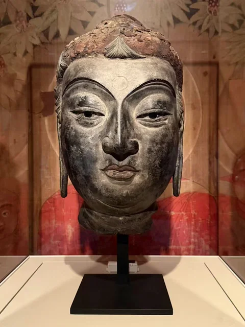
看起来厚重的面容，实际上由漆布壳体塑成。泥芯移除后，眉弓、眼睑和嘴唇仍由薄壳维持形状。工艺也改变了造像被搬运、观看的可能。
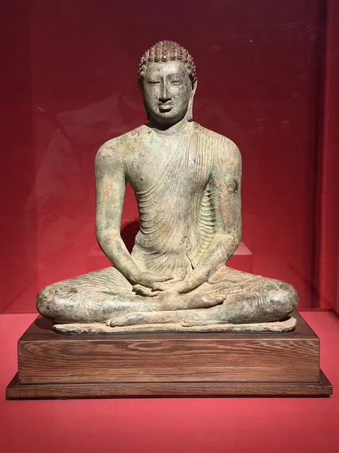
斯里兰卡佛像的眼部嵌有水晶。正面看双眼与宽肩，侧面看胸背，背面看衣纹如何继续落下；这尊像并不只有一个值得停留的方向。
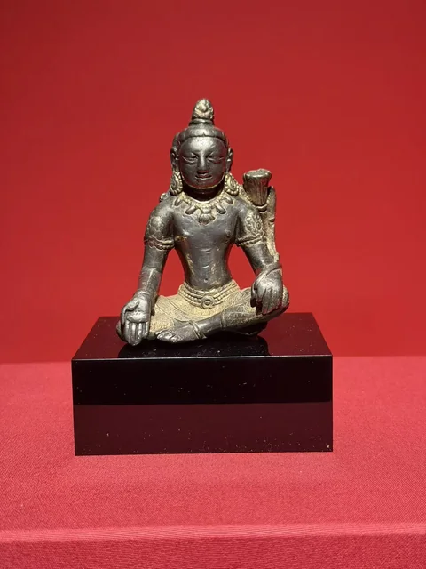
文殊像的身体没有被金色完全覆盖，衣饰与肌肤因此分开。再看爪哇金刚手，同样涉及金银，使用的却是嵌金工艺，而非局部鎏金。
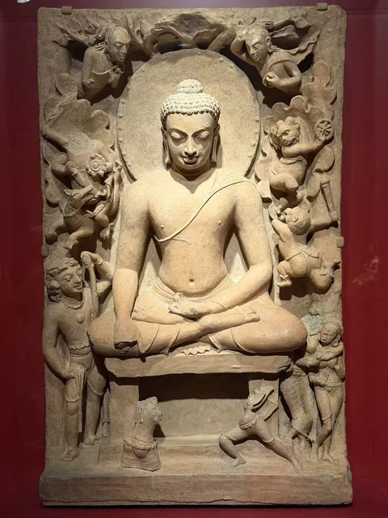
孟加拉陶浮雕把魔军、菩提树和静坐的佛陀放在同一画面中。泰国、印度与西藏的独立坐像则让右手垂过膝头，以触地印保留成道故事的关键。
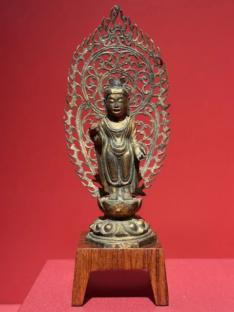
一件让红墙穿过镂空火焰，一件在叶形金属面上排列三尊小坐佛。两尊朝鲜半岛立像，把背光变成了不同的观看空间。
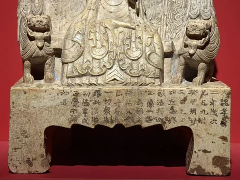
石灰岩三尊像与两件北魏金铜像，都把供养题记留在座上。从衣摆向下读到文字，造像便与父母、亲属及一切众生的祈愿连在一起。
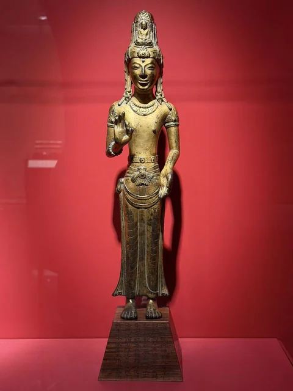
高冠、窄腰与垂直裙纹构成鲜明轮廓。这种阿嵯耶观音联系着云南的地方信仰；木座文字是另一条线索，不能与像身的年代直接合并。
THE NOTEBOOK / 28 WORKS
按地区翻看，也从一尊像走向相近的姿态、材料或故事。
28件虚舟收藏作品
陶
静坐的佛陀，被翻腾的人物包围。
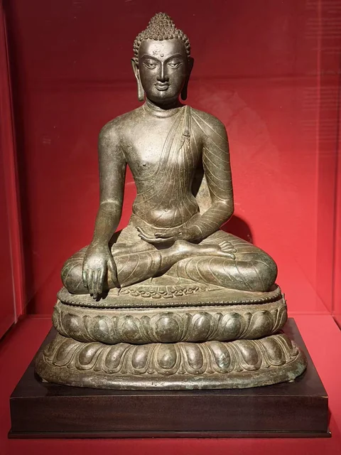
青铜、嵌银
嵌银的眼睛与双层莲座。
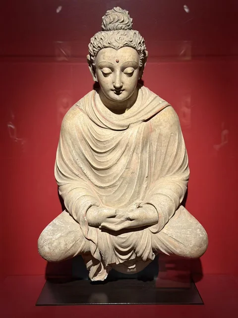
灰泥（stucco）
灰泥里的衣褶、卷发和低垂双眼。
青铜、嵌水晶
水晶眼、贴身薄衣与背面的衣纹。
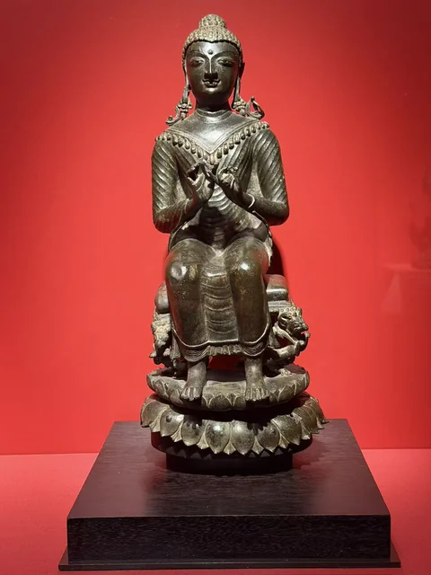
铜合金、嵌银
垂下的双足、胸前双手与透空座架。
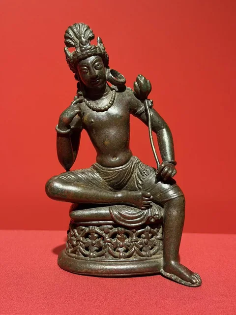
铜合金、嵌银
指尖靠近面颊，莲花升到肩侧。
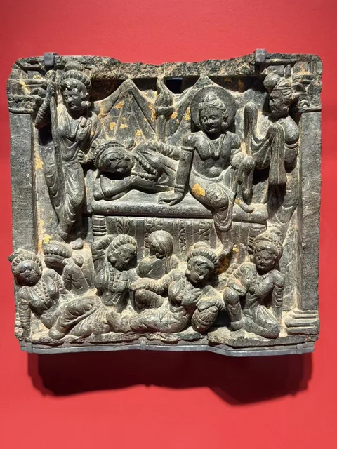
片岩、残留金彩
寝室与睡眠中的人物，构成出家前的一幕。
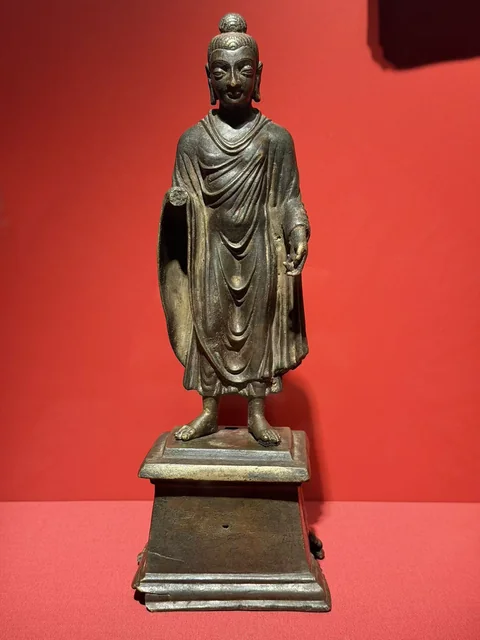
铜合金
从通肩衣褶，看到独立的方形座。
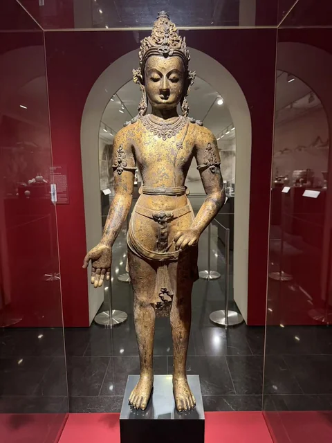
鎏金铜
从冠饰与面容，绕到残损的背面。
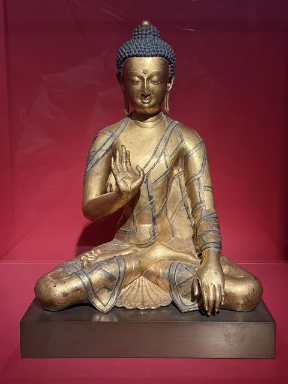
鎏金青铜、嵌银
袈裟上的银线，像拼接衣料的缝边。
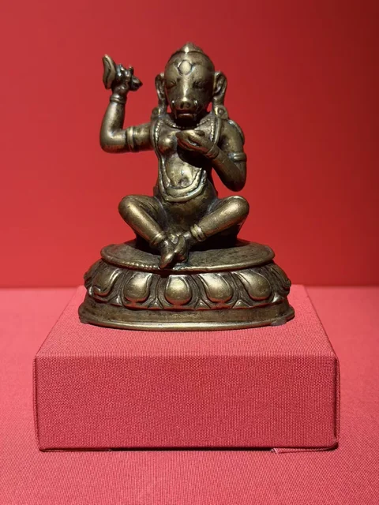
铜合金、嵌银、颜料
小小的猪首，与上举的弯刀和胸前颅器。
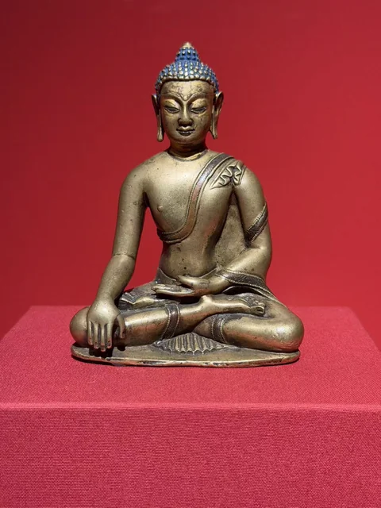
铜合金、嵌铜和银、颜料
触地印之外，还有衣缘、嵌饰与蓝色头发。
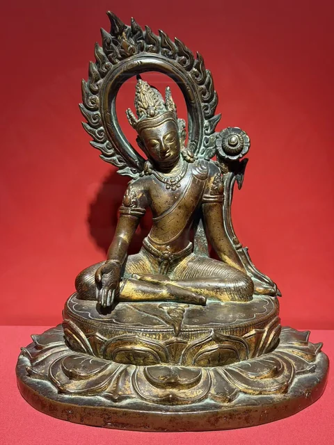
鎏金铜、颜料
莲花、张开的手掌与向一侧倾斜的身体。
局部鎏金银
银色的身体，与衣饰上局部的金色。
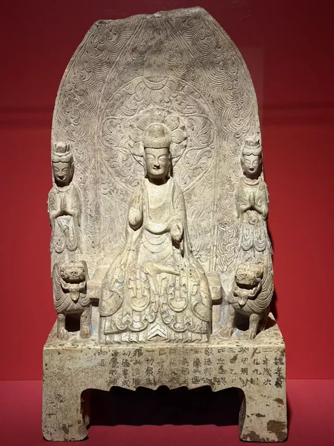
石灰岩
衣摆、狮子和台座文字，把造像与供养连在一起。
鎏金青铜
细长的身形、高冠与几乎垂直的裙纹。
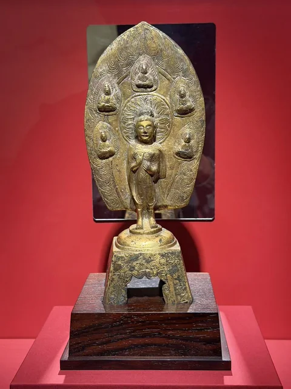
鎏金青铜
正面五尊小佛，背面另有浅刻形象。
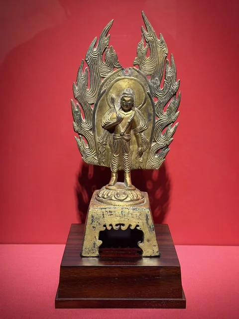
鎏金青铜
莲花与透空火焰背光，一起向上延伸。
脱胎干漆（Hollow-core dry lacquer）
眼睑与唇线的细薄转折，来自漆布塑造。
鎏金青铜
红墙透过火焰与卷草，成为背光中的空隙。
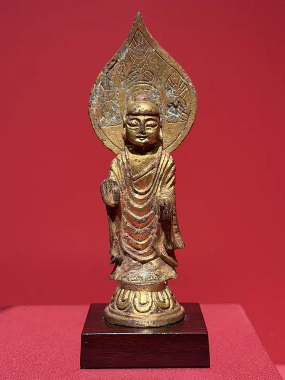
鎏金青铜
三尊小坐佛，围在主像头光周围。
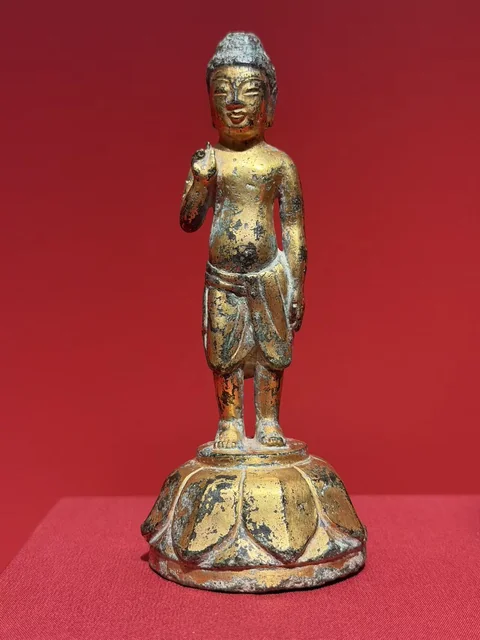
鎏金青铜
童子形体与莲座，指向佛陀诞生的故事。
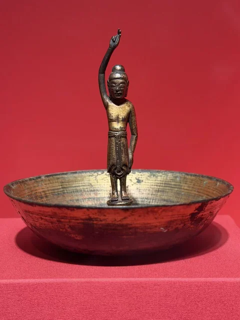
鎏金青铜；盆为后配
一手指天、一手向下的小像，立在浅盆中。
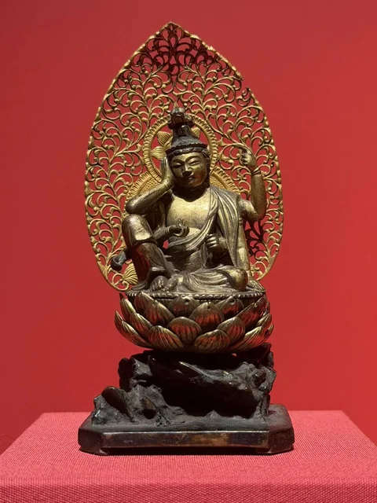
鎏金青铜
多臂坐像与细密的镂空卷草。
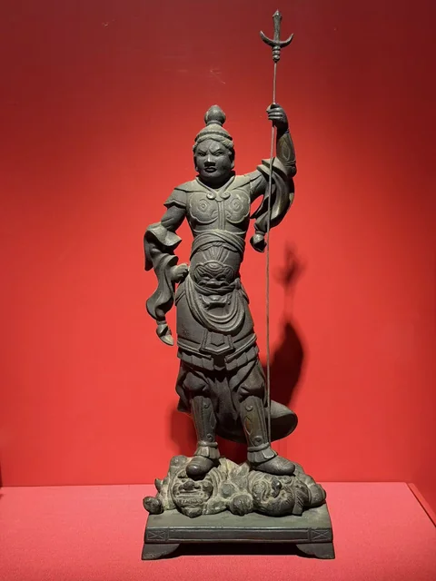
鎏金青铜
甲胄、兵器与脚下的承托形象。
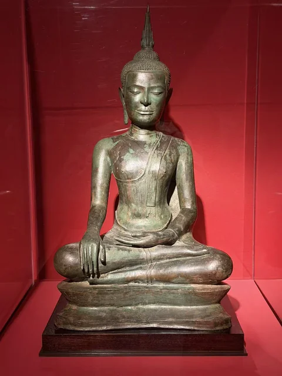
青铜
从右手指尖，看到平稳的双膝与火焰形顶饰。
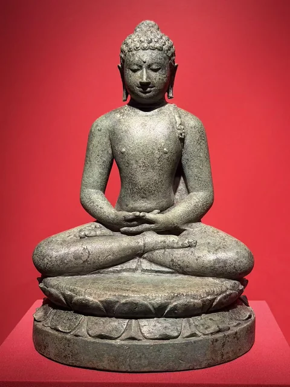
青铜
低垂的双眼与掌心相叠的双手。
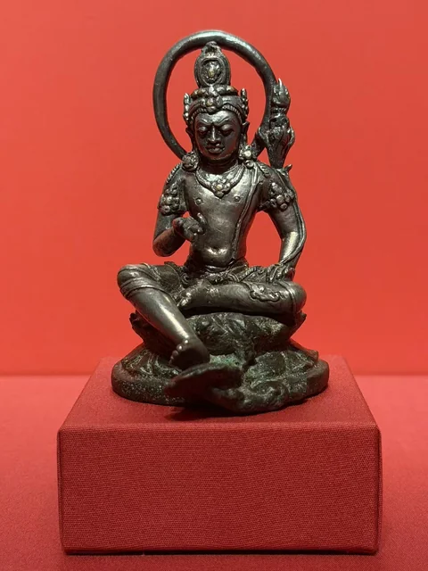
银、嵌金；铜合金底座
肩侧莲花上的金刚杵，藏在精巧的轮廓里。
COLLECTION / CONTEXT
虚舟收藏由一位不具名的私人收藏者建立，自2021年起长期借展于休斯顿美术馆。南亚、东南亚、喜马拉雅与东亚的造像，在这里共同呈现。参观时所见的地区名称有不同尺度：犍陀罗是历史文化区域，斯瓦特是河谷，大克什米尔也不等同于一条现代国界。
MFAH：Buddha / Nature 新闻稿 ↗ · MFAH：Buddha / Nature 展览页 ↗
展厅总说明把“虚舟”联系到佛教以舟筏比喻教法的传统：借助教法渡越无明。回到作品上，材料、手势与题记各自提供了入口。漆布怎样塑成佛首，嵌银怎样显出衣缝，供养者怎样把父母的愿望写入像座，这些具体的问题，让不同地区的造像有了可以互相参照的地方。
Approaching the Buddha: Transmission and Transformation，Hao Sheng著，另有八位研究者参与撰写，休斯顿美术馆出版、耶鲁大学出版社发行，2026年，128页。图录从供养、观看、传播与保护研究等方面讨论这一收藏。
MFAH馆店：Approaching the Buddha: Transmission and Transformation ↗ · 耶鲁大学出版社：Approaching the Buddha 书目信息 ↗
逐件年代、材质与题名主要依据现场展签，照片可在作品页展开查看；观看分析来自所附实拍。图录列作延伸阅读。尚有分歧的年代、展签错配及未释清的题记，分别记在相关作品的资料注中。